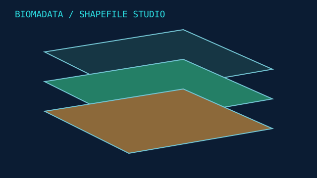
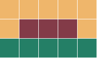

BiomaData — Shapefile Studio
Importação de Shapefiles, mapa com camadas e estudo espacial explicável.
MVP GIS · dados sintéticos

Explore o mapa por camadas
Use o controle no canto superior direito do mapa para ligar e desligar as camadas. Esta demonstração usa arquivos sintéticos.
Abrir mapa ↗ · Baixar Shapefiles de exemplo ↓Evolução das camadas e do estudo
O mapa agora inclui pontos de monitoramento, linha de acesso, vegetação de dois períodos e camadas calculadas de ganho, perda e estabilidade. Todos os elementos são sintéticos.
- Índice STRtree para selecionar cruzamentos espaciais.
- Upload local de pontos, linhas, polígonos e GeoJSON WGS84.
- Comparação temporal com datas verificadas: ganho, perda e variação líquida.
- Categorias confirmadas por revisor, com data de referência.
- Dijkstra em grade de resistência: caminho de menor custo e barreiras.
- Contrato BiomaData versionado com SHA-256 para exportação local.
Na comparação sintética, aproximadamente 33,22 ha mudaram em cada direção, enquanto 85,43 ha permaneceram estáveis. São diferenças geométricas entre camadas fornecidas, sem atribuição automática de causas.
Relatório da evolução JSON ↗ · Camadas temporais JSON ↓Resistência ecológica — demonstração

Amarelo: caminho. Verde: baixa resistência. Vermelho: alta resistência. A rota sintética de 180 m contorna as células de maior custo. A grade não é georreferenciada e não comprova a viabilidade de um corredor ecológico.
Grade de exemplo JSON ↓ · Pacote de integração sintético ↓O pacote é exportado após revisão; nenhuma transmissão ou alteração na aplicação BiomaData original é realizada.
python demo.py
python evolution_demo.pyInterpretar arquivos e gerar camadas territoriais
A ferramenta agora reconhece atributos de limites municipais e de bioma, respeita a projeção e a codificação e gera camadas de interseção com o Cerrado. Aceita também arquivos auxiliares .sbn e .sbx. A análise foi executada com um conjunto fornecido de seis limites; esses arquivos e seus resultados permanecem locais.
- Camadas de origem convertidas para GeoJSON.
- Municípios dentro e fora do Cerrado, quando houver geometria.
- União dos municípios e indicadores de área por limite.
- Mapa geral, mapa municipal, tabela CSV e relatório JSON.
python territory.py /caminho/arquivos.zip --output output/territoryA classificação por atributos é uma sugestão sujeita à revisão. Limites administrativos não informam vegetação atual, desmatamento ou datas de observação.
Resumo do projeto
Objetivo
Apoiar estudos do BiomaData a partir de camadas ambientais em Shapefile, com visualização e métricas conferíveis.
Entrega atual
Importador de polígonos, interface local de upload ZIP, seleção de camadas, mapa interativo e estudo com área, cobertura e sobreposição. O portfólio exibe uma demonstração sintética; arquivos próprios são processados pela aplicação local.
Técnicas e funcionamento
Python, PyShp, PyProj, Shapely/GEOS, Folium/Leaflet e Streamlit. Lê a projeção .prj, reprojeta para WGS84 no mapa e UTM local para cálculos de área.
Dados e treinamento
A demonstração gera três Shapefiles sintéticos. O estudo inteligente usa regras geométricas, sem treinamento de machine learning ou inferência de classes ambientais. Nomes e categorias são fornecidos pelo usuário.
Resumo sintético
Criei uma ferramenta que recebe camadas Shapefile e monta um mapa onde posso ligar e desligar cada camada. Ela calcula a cobertura dentro da área escolhida e os cruzamentos entre camadas, gerando um estudo espacial que pode ser conferido e exportado.
Resultados e limites
Na demonstração, a área de estudo tem 355,96 ha; vegetação cobre 33,33%, zona de observação cobre 30,00% e ambas se cruzam em 41,53 ha. Dados são fictícios. A análise regional não produz diagnóstico ecológico ou legal e exige revisão da projeção para dados reais.
Próximas etapas
Validar com dados autorizados, calibrar resistência ecológica, importar GeoTIFF e implementar um receptor autenticado do pacote no BiomaData. A exportação já está disponível; a aplicação original ainda não está conectada.
Execute com seus arquivos
python -m pip install -r requirements-app.txt
streamlit run app.pyNa interface local, envie ZIP com .shp, .shx, .dbf e .prj na raiz, selecione a camada limite e clique em Gerar estudo espacial. O processamento é local; o mapa base e bibliotecas de visualização fazem requisições externas.
python -m pip install -r requirements.txt
python demo.py
python -m unittest discover -s tests -v